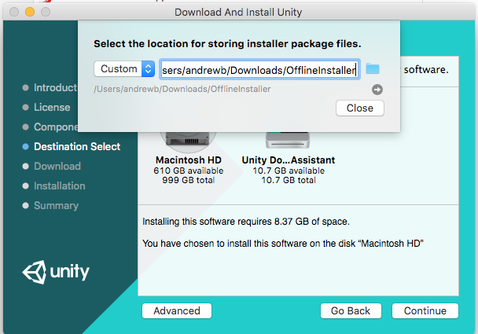
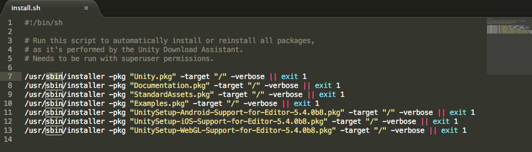

Installing Unity offline without the Hub
The Unity Download Assistant supports offline deployment. This allows you to download all the necessary files for installing Unity, and to generate a script for repeating the same installation on other computers without internet access.
Preparation
Run the Download Assistant, and install Unity as normal on one computer. This computer must have enough free disk space to download all the files. Click the dropdown and select Custom, then choose the location you wish to download the files to.

Check you have everything you need
Open your PC's file manager, navigate to the custom location folder you specified earlier, and look for the .sh or .bat file inside that folder. Check the contents of this file. It should look similar to the following example:

Deploying Unity to other computers
Windows
- Copy the entire folder to the target Windows PC, and run the supplied
.batfile. - To avoid the Windows UAC prompt, run
install.batfrom the Administrator shell. In the Start menu, search forcmd.exe, right-click, and select Run as administrator. - Navigate to the folder with the scripts. This will usually be in your Downloads folder (
cd C:\Users\[YourName]\Download\UnityPackages).
Mac
- Copy the entire folder to the target Mac OS X machine, and run the supplied
.shfile. Runsudo install.sh. - Navigate to the folder with the scripts. This will usually be in your Downloads folder (
cd ~/Downloads/UnityPackages). - You can repeat these instructions as many times as you need to for each computer you wish to install Unity on.